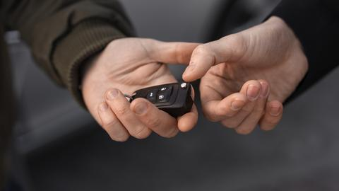
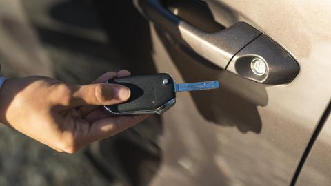
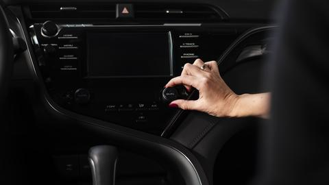

Mazda · Kielce i okolice
Kluczyk Mazda w Kielcach – składany, zbliżeniowy i z importu
Kluczyk Mazda – składany z pilotem albo zbliżeniowy z przyciskiem START – w wielu modelach dorobimy i zakodujemy przy samochodzie, w Kielcach i okolicznych miejscowościach, nawet gdy zginął ostatni egzemplarz. Masz Mazdę z USA lub Kanady? Po numerze VIN sprawdzimy także, czy menu i zegary dadzą się spolszczyć.
Kluczyk Mazda – składany czy zbliżeniowy?
W Mazdach z ostatnich dwóch dekad najczęściej trafiają się dwa rodzaje kluczyków:
| Kluczyk | Przykładowe modele | Warto wiedzieć |
|---|---|---|
| Składany z pilotem | m.in. pierwsza Mazda 3 (BK) i pierwsza Mazda 6 (GG) | instrukcje wielu roczników podają baterię CR1620 |
| Zbliżeniowy (advanced key) | część wersji nowszych modeli, np. CX-5, CX-30 czy Mazdy 3 | w pilocie ukryty jest kluczyk pomocniczy, wyjmowany po wciśnięciu zatrzasku; dla wielu modeli instrukcje podają baterię CR2025 |
Trafiają się też inne warianty, np. osobny pilot i kluczyk. Jaki kluczyk Mazda pasuje do Twojego auta i czy kodowanie będzie możliwe przy samochodzie, ustalamy po numerze VIN – w obrębie jednego modelu bywają różne wersje, także zależnie od rynku, na który auto wyprodukowano.
Kiedy kluczyk Mazdy zaczyna sprawiać kłopoty
- Słabnąca bateria – instrukcje Mazdy wymieniają typowe objawy: pilot nie działa, a jego lampka nie mruga po naciśnięciu przycisku, zasięg się zmniejsza, a w autach z kluczykiem zbliżeniowym zielona kontrolka KEY miga na zegarach przez około 30 sekund po wyłączeniu silnika. Producent radzi wymieniać baterię mniej więcej raz w roku, bo ostrzeżenie nie zawsze pojawi się na czas.
- Zniszczony kluczyk składany – wyrobiony zawias, chwiejący się grot, pęknięta obudowa.
- Zgubiona tabliczka z numerem kodu – Mazda dołącza do kompletu kluczyków plakietkę z numerem, który według instrukcji przydaje się przy wykonaniu zapasowego kluczyka. Instrukcja zaleca przechowywać ją w bezpiecznym miejscu poza autem.
- Mazda z USA lub Kanady – menu po angielsku, brak tylnego światła przeciwmgłowego, a czasem tylko jeden kluczyk. O świetle piszemy w artykule tylne światło przeciwmgłowe w aucie z USA.
- Kluczyk zbliżeniowy raz działa, a raz nie – odsuń pilota od telefonu, ładowarki i innych kluczyków. Podobne objawy omawiamy w tekście o tym, co zrobić, gdy kluczyk keyless nie działa.
Dorabianie i kodowanie kluczyka Mazda oraz inne usługi
Dojeżdżamy do Mazdy tam, gdzie stoi, i w wielu modelach wykonujemy na miejscu:
- zapasowy kluczyk lub pilot – dorobiony i zakodowany w aucie (programowanie kluczy),
- kluczyk od zera, kiedy zgubiony kluczyk Mazda był ostatnim (utrata wszystkich kluczyków),
- usunięcie z pamięci auta kluczyków zgubionych albo nieoddanych przez poprzedniego właściciela – po zakupie auta z importu warto to zrobić od razu,
- otwieranie Mazdy, gdy kluczyk został w kabinie – głównie dekoderami do zamków, tak by nie uszkodzić drzwi ani szyb (otwieranie samochodów),
- diagnozę i naprawę immobilizera albo sterownika (sterowniki),
- wgranie języka polskiego, tylne światło przeciwmgłowe i kodowanie funkcji (kodowanie Ford i Mazda) – podobnie jak w Fordach.
Możliwości różnią się między generacjami i rynkami, z których pochodzi Mazda. Po VIN powiemy, co zrobimy przy aucie, a cenę podamy przez telefon przed rozpoczęciem pracy.
Rozładowany kluczyk zbliżeniowy – jak uruchomić Mazdę
Bateria w kluczyku zbliżeniowym potrafi wyczerpać się bez wyraźnego ostrzeżenia. Instrukcje nowszych Mazd opisują na taką sytuację prostą procedurę:
- Otwórz drzwi kierowcy kluczykiem pomocniczym wyjętym z pilota.
- Wciśnij i trzymaj pedał hamulca (w aucie z ręczną skrzynią – sprzęgła).
- Dotknij pilotem przycisku START – zależnie od modelu tylną stroną albo stroną z emblematem – i naciśnij przycisk zgodnie z sygnalizacją kontrolek opisaną w instrukcji.
W starszych Mazdach z kluczykiem zbliżeniowym procedura może wyglądać inaczej – sprawdź opis w instrukcji swojego auta. Potem jak najszybciej wymień baterię; jej typ znajdziesz na starej baterii albo w instrukcji. Jeśli auto mimo to nie zapala, przyczyna może leżeć gdzie indziej – zadzwoń.
Dokumenty, VIN i tabliczka z kodem
- dowód osobisty i dowód rejestracyjny – na ich podstawie potwierdzamy, że Mazda należy do Ciebie, zanim cokolwiek zakodujemy lub otworzymy,
- numer VIN i informacja, z jakiego kraju sprowadzono auto,
- każdy kluczyk, który ma działać także po wizycie,
- tabliczka z numerem kodu kluczyka, jeśli ją masz.
Tabliczkę z kodem i zapasowy kluczyk trzymaj w domu, a nie w schowku. Kupujesz Mazdę z importu? Zapytaj sprzedającego o liczbę kluczyków jeszcze przed zakupem – brakujący najłatwiej dorobić, póki masz sprawny egzemplarz.
Usługi dla aut Mazda

Otwieranie samochodów
Kluczyki zamknięte w kabinie lub bagażniku, rozładowany akumulator, zamek, który nie reaguje – otwieramy auto całą dobę.
Szczegóły
Dorabianie i kodowanie kluczy
Zapasowy kluczyk z chipem, pilot, keyless – dorabiamy i kodujemy, a zgubione kluczyki usuwamy z pamięci auta.
Szczegóły
Utrata wszystkich kluczyków
Nie został żaden kluczyk? Otwieramy auto, przygotowujemy i kodujemy nowy, a zgubiony usuwamy z pamięci.
Szczegóły
Sterowniki i immobilizery
Auto nie odpala lub nie widzi kluczyka – naprawa i wymiana sterownika silnika, prace przy immobilizerze.
Szczegóły
Ford i Mazda – kodowanie
Język polski w aucie, tylne światło przeciwmgłowe, aktywacja i wyłączanie funkcji w Fordzie i Maździe.
SzczegółyPytania i odpowiedzi
Jaką baterię ma pilot Mazdy?
Czy dorobicie kluczyk do Mazdy sprowadzonej z USA?
Zgubiłem tabliczkę z numerem kodu. Czy dorobicie kluczyk?
Mam jeden kluczyk do Mazdy – czy warto dorobić drugi?
Przydatne porady

Kluczyki samochodoweWymiana baterii w kluczyku samochodowym – krok po kroku
Pilot działa coraz słabiej? Wymiana baterii w kluczyku to zwykle kilka minut pracy. Pokazujemy, jak zrobić to bezpiecznie, jaką baterię kupić i co zrobić, gdy po wymianie kluczyk nadal nie działa.
Czytaj · 4 min Kluczyki samochodowe
Kluczyki samochodoweKluczyk keyless nie działa – co sprawdzić, zanim wezwiesz pomoc
Kluczyk keyless nie działa, a auto nie reaguje na klamkę ani przycisk START? Zanim pomyślisz o poważnej awarii, sprawdź kilka rzeczy – często winna jest bateria albo zwykłe zakłócenia.
Czytaj · 5 min
Elektronika autaJęzyk polski w Fordzie i Maździe – co da się zmienić w menu i zegarach
Sprowadziłeś Forda lub Mazdę, a menu mówi po angielsku albo po niemiecku? Wyjaśniamy, od czego zależy wgranie języka polskiego, co zwykle da się zmienić i na co uważać, zanim ktoś podłączy się do Twojego auta.
Czytaj · 4 minInne marki
Nazwa marki Mazda służy wyłącznie do opisu, do jakich aut wykonujemy usługi. Nie jesteśmy autoryzowanym serwisem tej marki.
Potrzebujesz pomocy teraz?
Zadzwoń – powiemy, ile to potrwa i ile będzie kosztować, zanim wyjedziemy.